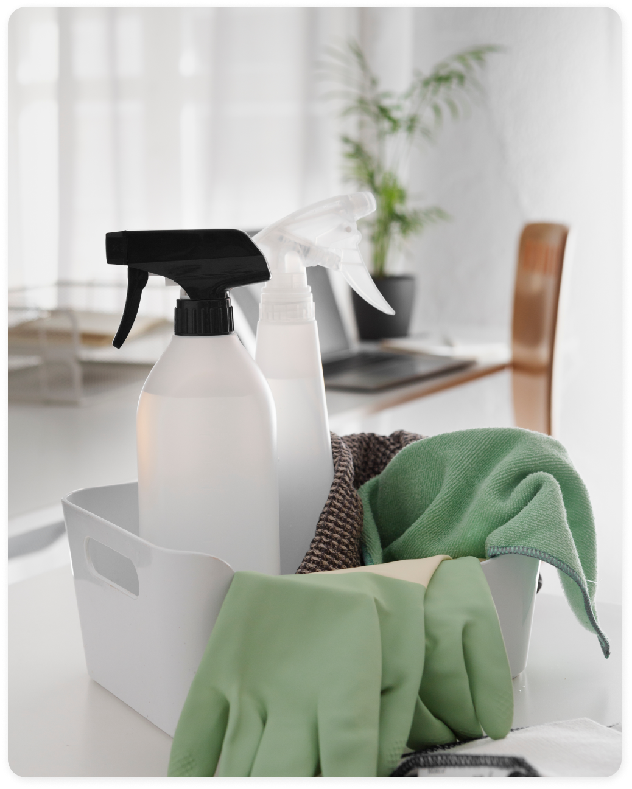
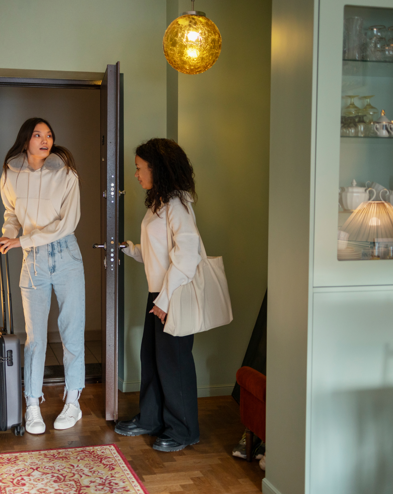
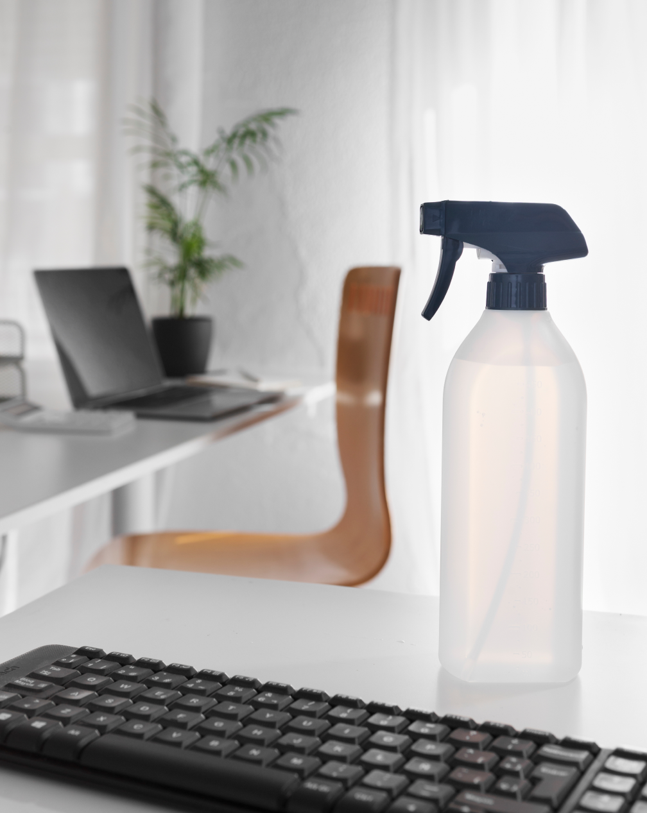
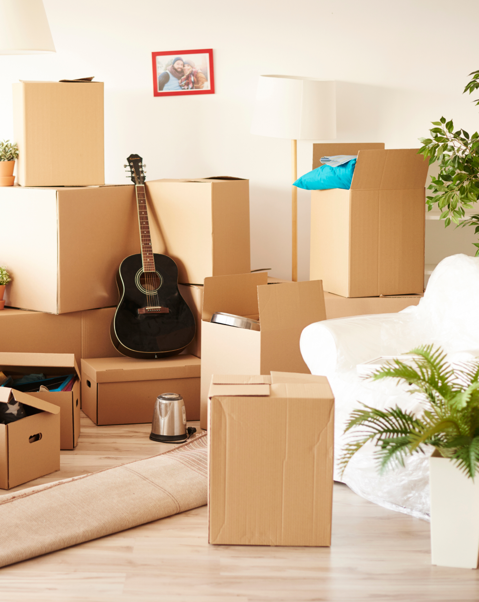
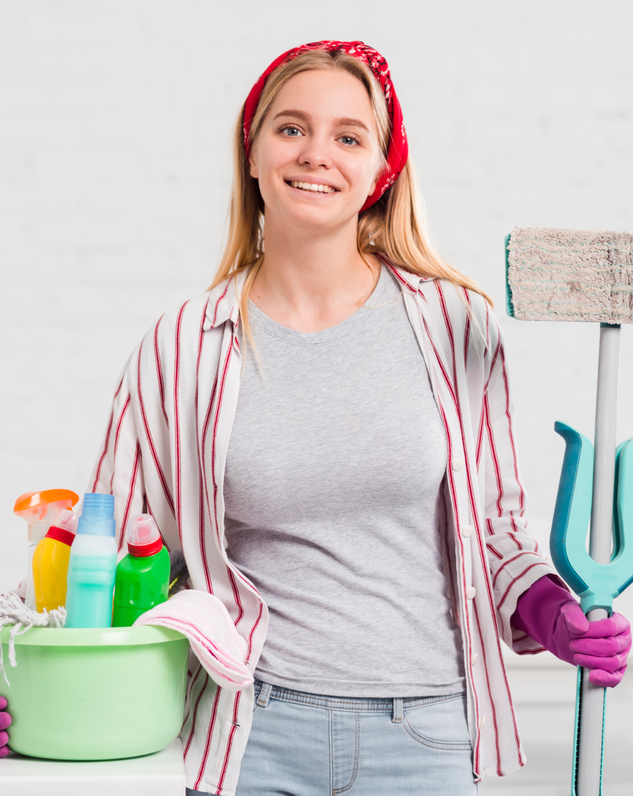
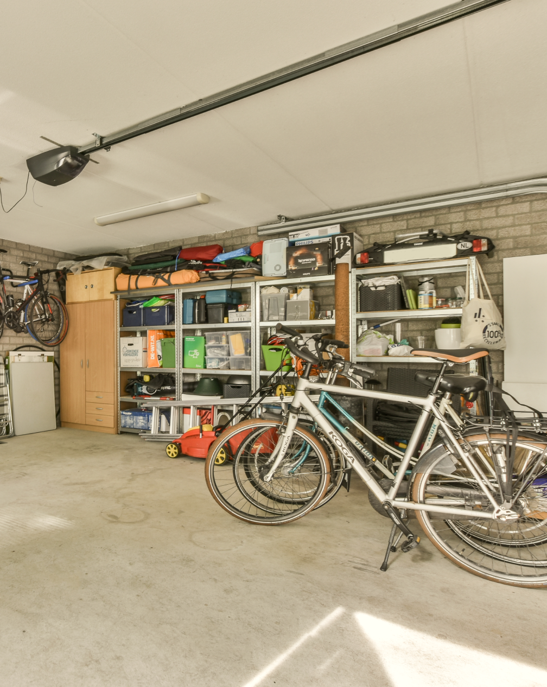

<section class="services">
  <div class="wrapper">
    <div class="services__inner">
      <h4 class="services__title section-title">Services</h4>
      <div class="services__tabs">
        <ul class="services__btns">
          <li class="services__btn">General</li>
          <li class="services__btn">Airbnb</li>
          <li class="services__btn">Office</li>
          <li class="services__btn">Move in Move out</li>
          <li class="services__btn">Deep Cleaning</li>
          <li class="services__btn">Construction cleaning</li>
          <li class="services__btn">Other</li>
        </ul>
        <ul class="services__tab">
          <li class="services__item services__item--active">
            
            <div class="services__info">
              <span>General</span>
              <p>
                Airbnb
                Office
                Move in Move out
                Deep Cleaning
                Construction cleaning
                Other
                General
                Our standard cleaning package is tailored to elevate your living spaces to the pinnacle of hygiene and
                comfort. Service
                includes vacuuming and floor washing to restore the vitality of your floors. We meticulously wash sinks,
                taps, and
                faucets, leaving them gleaming and sanitized. Countertops and the front of cabinets receive a tender
                touch, ensuring
                every surface is spotless.
                Heart of your home – the kitchen – where we undertake the task of cleaning all appliances, ensuring they
                are sparkle. In
                the bathroom, we go above and beyond, disinfecting and cleaning the toilet, washing the bathtub and
                shower, and
                polishing the sink to a reflective shine. Glass surfaces and mirrors are treated with precision, leaving
                no streaks
                behind.
                As part of our attention to detail, we delicately lift and wipe all light objects, dusting underneath
                statues and photo
                frames. Work surfaces become pristine canvases as we meticulously manage and arrange every item,
                creating
                an organized
                and inviting atmosphere.</p>
            </div>
          </li>
          <li class="services__item">
            
            <div class="services__info">
              <span>General</span>
              <p>
                Airbnb
                Office
                Move in Move out
                Deep Cleaning
                Construction cleaning
                Other
                Airbnb
                Introducing our Airbnb cleaning service designed to meet the dynamic needs of hosting guests. We
                understand the urgency
                of preparing your apartment for new arrivals, and our dedicated team is here to ensure a seamless
                transition between
                guests, leaving your space immaculate and inviting.
                Our fast-track service focuses on key areas to guarantee a quick turnaround without compromising
                quality.
                Vacuuming and
                floor cleaning for a fresh and welcoming environment. Bathroom sanitation with a meticulous cleaning of
                the toilet,
                shower, and sink to ensure a pristine appearance and hygienic conditions.
                In the kitchen, we expedite the cleaning process by targeting high-traffic areas, swiftly wiping
                countertops, cleaning
                appliances, and ensuring a sanitized sink. Fast and effective glass surface and mirror cleaning enhance
                the overall
                aesthetic appeal of your space.
                Beyond the essentials, we understand the importance of presenting a well-organized and inviting
                atmosphere. Our team
                efficiently manages and arranges items on surfaces, creating an inviting ambiance for your incoming
                guests.</p>
            </div>
          </li>
          <li class="services__item">
            
            <div class="services__info">
              <span>123123</span>
              <p>
                Here are more examples of cleaning tasks included in our office cleaning services:
                Dusting and wiping down desks and work surfaces..
                Emptying trash bins and replacing liners.
                Vacuuming or sweeping and mopping floors.
                Cleaning and disinfecting common spaces like conference rooms and break areas.
                Wiping down tables, chairs, and other furniture.
                Dusting and cleaning decorative items.
                Vacuuming or cleaning carpets.
                Dusting and cleaning cubicle walls and partitions.
                Vacuuming or cleaning carpets in cubicle spaces.
                Sanitizing shared surfaces.
                Thorough cleaning and sanitizing of toilets, sinks, and countertops.
                Refilling soap dispensers and restocking paper towels or toilet paper.
                Cleaning and sanitizing kitchen surfaces, including countertops and appliances.
                Emptying and cleaning refrigerator shelves.
              </p>
            </div>
          </li>
          <li class="services__item">
            
            <div class="services__info">
              <span>dasasd</span>
              <p>
                Whether you're settling into a new home or bidding farewell to your old one, our comprehensive cleaning
                package is
                designed to ensure a fresh start in your new space.
                For Move-In situations, we pay special attention to detail, focusing on creating a clean and welcoming
                environment. Our
                team diligently cleans all surfaces, including floors, walls, and ceilings, ensuring a spotless
                foundation
                for your new
                chapter. In the kitchen, appliances are thoroughly cleaned, and cabinets are wiped down, providing you
                with a hygienic
                space to start creating memories.
                In the bathroom, we leave no corner untouched, disinfecting and cleaning fixtures, tiles, and surfaces.
                Glass surfaces
                and mirrors receive meticulous attention. Every effort is made to make your new home move-in ready, so
                you
                can settle in
                with peace of mind.
                For Move-Out scenarios, our goal is to leave your previous residence in impeccable condition. We clean
                and
                sanitize
                every space, addressing any wear and tear to ensure the property is handed over in optimal condition. We
                pay special
                attention to high-touch areas and appliances, leaving no trace of your occupancy.
              </p>
            </div>
          </li>
          <li class="services__item">
            
            <div class="services__info">
              <span>asdasadsd</span>
              <p>
                Discover the transformative power of our Deep Cleaning, where we go beyond the surface to rejuvenate and
                restore your
                living spaces. Whether you're preparing for a special occasion or simply aiming to give your home a
                thorough refresh,
                our comprehensive approach ensures an unparalleled level of cleanliness.
                Our heavy-duty cleaning service includes meticulous window washing to bring clarity and brightness to
                your
                living
                spaces. We use professional-grade degreasers to tackle stubborn stains and greasy surfaces in the
                kitchen,
                leaving
                behind a spotless and sanitized environment. Appliances, including ovens and stovetops, receive special
                attention,
                ensuring they shine and function optimally.
                In bathrooms, our deep cleaning targets grime and buildup, leaving fixtures, tiles, and surfaces
                pristine.
                We employ
                powerful degreasing agents to eliminate accumulated dirt in hard-to-reach areas, promoting a hygienic
                and
                visually
                appealing space. From light fixtures to baseboards, every nook and cranny is thoroughly cleaned,
                providing
                a
                comprehensive refresh for your home.
              </p>
            </div>
          </li>
          <li class="services__item">
            
            <div class="services__info">
              <span>klklk</span>
              <p>
                Introducing our After Construction or After Repair Works Cleaning Services, a specialized offering
                designed to transform
                your space from a construction site to a pristine and habitable environment. We understand the unique
                challenges that
                arise after construction or renovation, and our dedicated team is here to ensure a thorough cleaning
                process.
                Our comprehensive service begins by addressing construction debris and dust, sweeping and vacuuming
                every
                surface to
                eliminate particles and residue. We pay special attention to fine details, cleaning hard-to-reach areas
                and crevices
                where dust tends to accumulate during construction.
                Windows, frames, and sills are meticulously cleaned to restore transparency and natural light. We use
                powerful cleaning
                agents to remove any adhesive residues, paint splatters, or other construction-related stains, ensuring
                a
                flawless
                finish on surfaces throughout your space.
                In the kitchen, our team focuses on removing post-construction dust from cabinets, countertops, and
                appliances. Special
                attention is given to areas around electrical outlets and switches to guarantee safety and cleanliness.
              </p>
            </div>
          </li>
          <li class="services__item">
            
            <div class="services__info">
              <span>vvcvx</span>
              <p>
                Welcome to our "Other Services" section, where we cater to your unique and special cleaning requests,
                going beyond the
                standard offerings to provide tailored solutions for a variety of needs. Whether you're looking to
                organize your garage,
                declutter storage spaces, or have specific requests not covered by regular services, we've got you
                covered.

                Have a cleaning task that falls outside the norm? We are here to accommodate your special requests.
                Whether it's
                cleaning unusual surfaces, handling delicate items, or addressing specific concerns, our team is
                versatile
                and ready to
                tailor our services to meet your unique requirements.
                Our commitment to customer satisfaction extends to providing custom solutions for any cleaning-related
                task. If you have
                a specific request that is not covered by our standard services, let us know, and we will work with you
                to
                develop a
                personalized cleaning plan that meets your expectations.
              </p>
            </div>
          </li>
        </ul>
      </div>
    </div>
  </div>
</section>